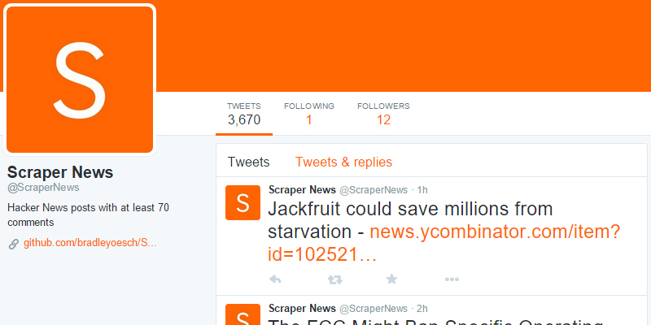
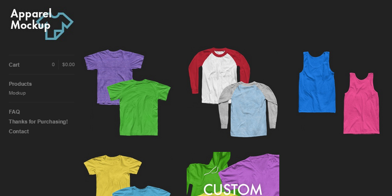

Scraper News
November 2014
https://twitter.com/ScraperNews
I realized that when I went to Hacker News I would scan the page and click on titles I found interesting that also had a lot of comments, because to me that signaled that the content itself generates discussion, rather than the number of votes, which signals an attention-grabbing title. I built a Twitter bot to scrape the front page of Hacker News and tweet out any stories that have at least 70 comments. I now go to Scraper News instead of Hacker News because it condenses the information down to the most talked about articles, plus I can catch up on days I missed.
This was built in python, using the Scrapy and Twython libraries, and is hosted on this server through Digital Ocean. The scraper runs every 15 minutes with a cron job.
Apparel Mockup
January 2011
http://apparelmockup.bigcartel.com
In high school I spent a lot of time on a now defunct tee design forum (Emptees and saw that many designers were either using poorly made or expensive shirt mockups. I decided to make my own high quality mockups with pictures I took, and sold them through an online marketplace. I have enjoyed a small, consistent stream of orders each month that over the last several years has resulted in a nice amount of extra money (that I now throw away on Ubers). Recently I have begun to accept custom mockup orders, where I create a mockup based on a client's own photography for their personal or commercial use.
These were made in Photoshop, with pictures taken way back before iPhone cameras were good.